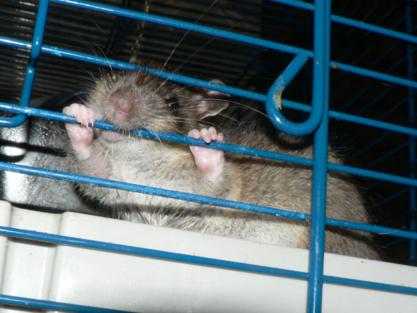
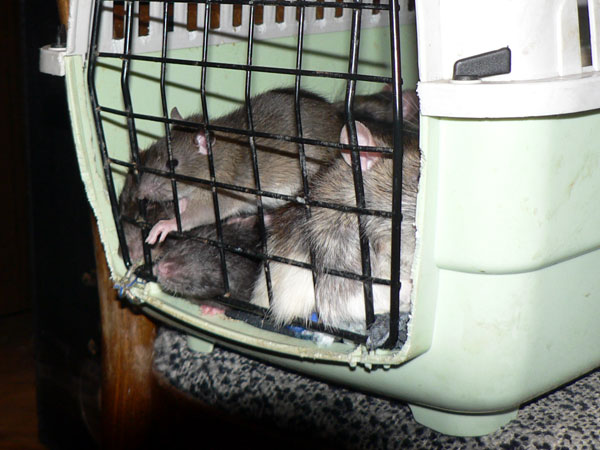
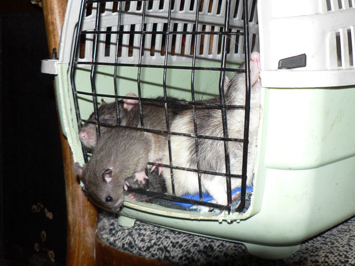
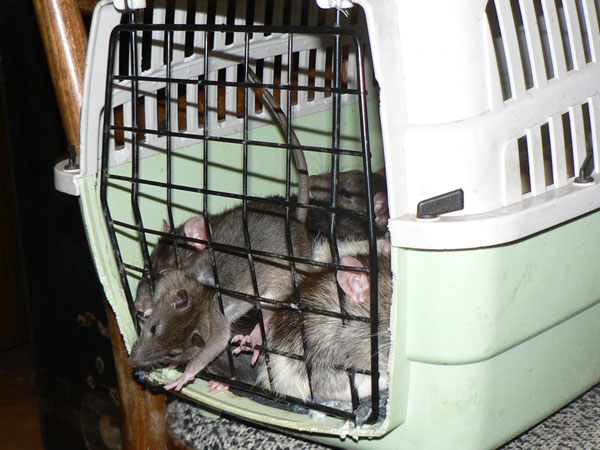

Ноябрь 2009
Иннокентий Пасюкович Тихвинский в заключении.

— Грррр! Грррр! Грррр!

— А вот так надкусить?

— А дверцу отжать?
В общем, не получилось у свободолюбивого пасюка сгрызть
клетку.
Более того, на время уборки всех запирали в переноску:

— Никодим, плохо грызешь! Сейчас, хоть маленький, научу…

— Вот так, пошел через решетку наружу…

— А что там внизу?

— Ничего интересного. Пойду-ка я обратно, в компанию.

— А-а-а! Застрял!! Пустите меня обратно!!!